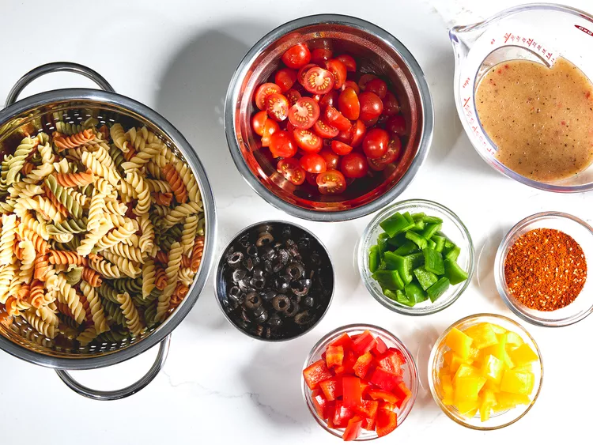
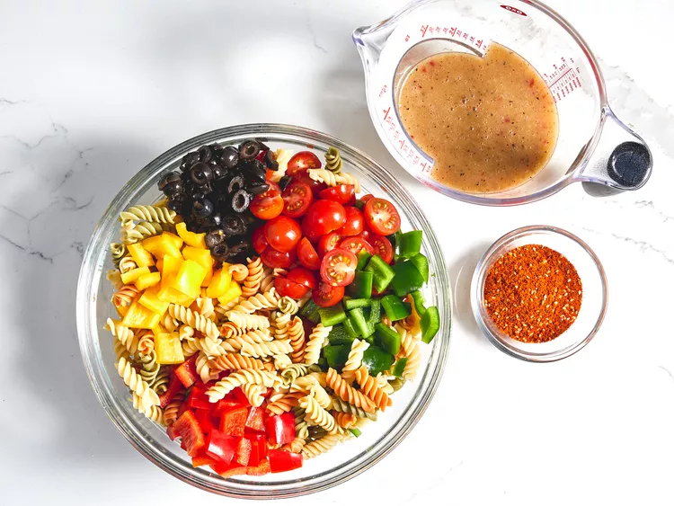
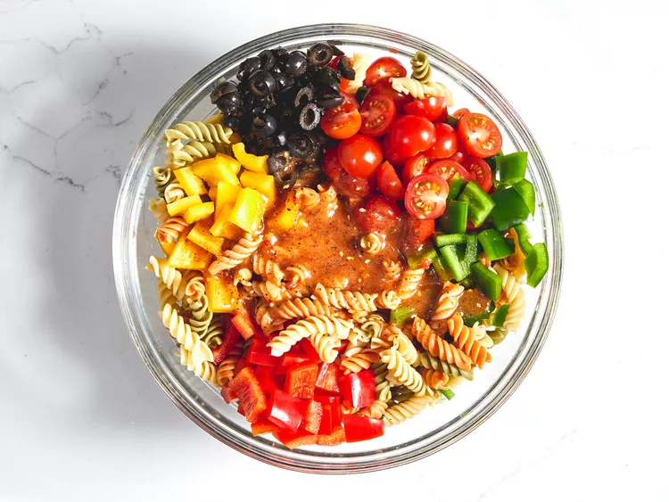
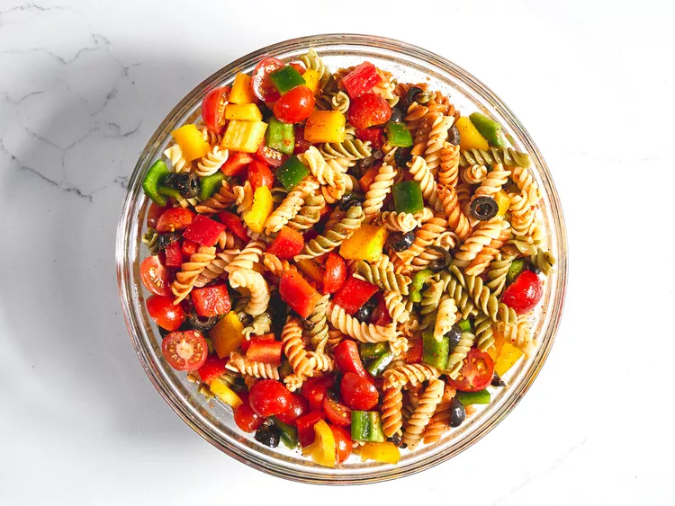

Pasta Salad

Description
This pasta salad is nice and colorful, easy to make, and great for summer picnics or parties. The recipe was given to me by a dear friend many years ago, and I've been making it ever since!
Ingredients
- 1 pound tri-colored spiral pasta
- 1 (16 ounce) bottle Italian-style salad dressing
- 6 tablespoons salad seasoning mix
- 2 cups cherry tomatoes, diced
- 1 green bell pepper, chopped
- 1 red bell pepper, diced
- ½ yellow bell pepper, chopped
- 1 (2.25 ounce) can black olives, chopped
Steps
- Gather all ingredients.

- Bring a large pot of lightly salted water to a boil. Cook pasta in the boiling water, stirring occasionally, until tender yet firm to the bite, about 10 to 12 minutes; rinse under cold water and drain.
- Whisk Italian dressing and salad spice mix together until smooth. Combine pasta, tomatoes, bell peppers, and olives in a salad bowl.

- Pour dressing over salad and toss to coat.

- For the best flavor, refrigerate the pasta salad for 8 hours to overnight.

- Enjoy!